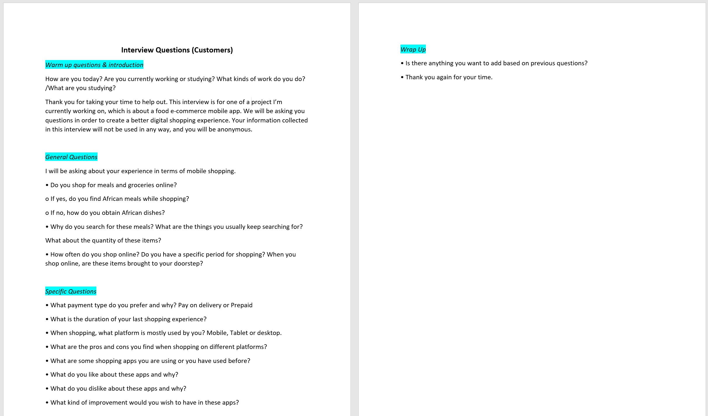
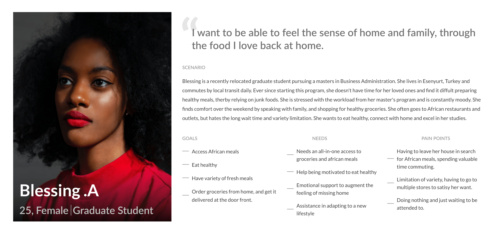
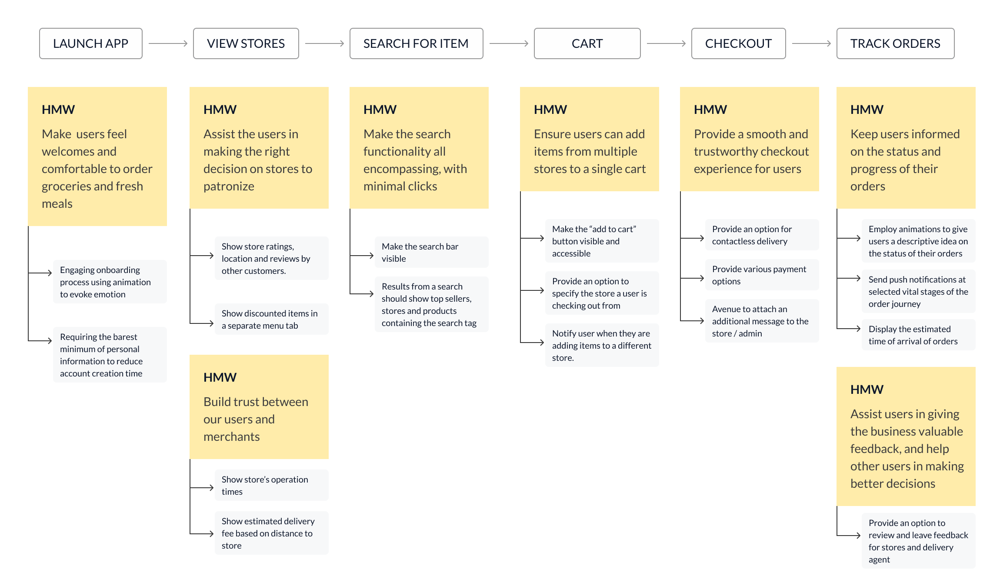
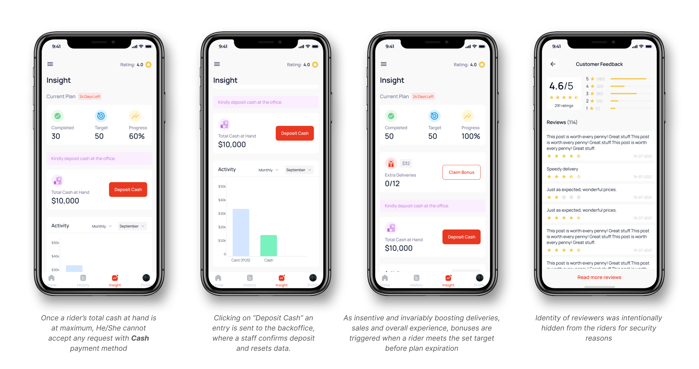
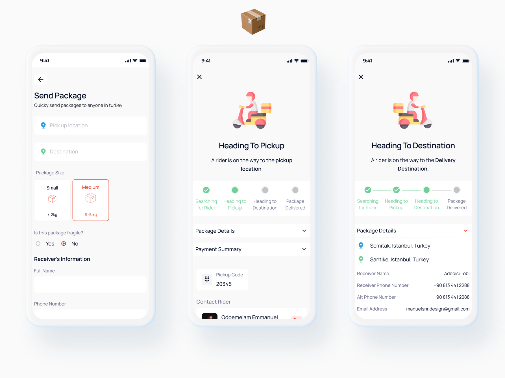
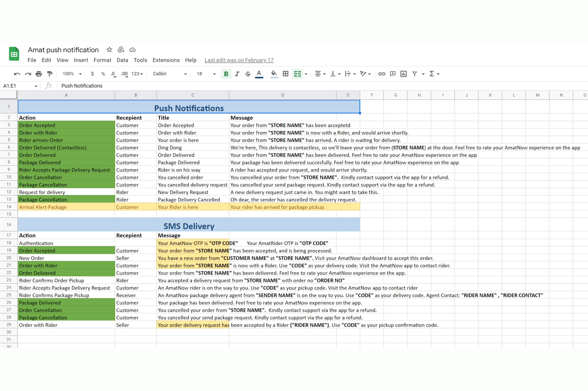
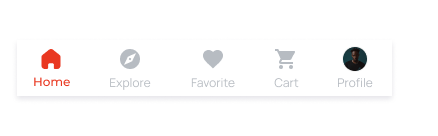
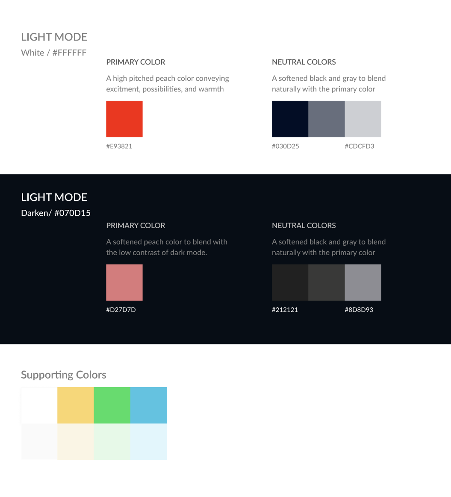
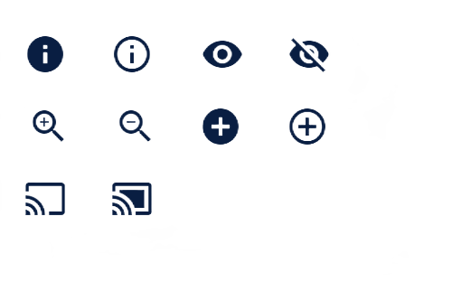

Connecting immigrants with the taste of home
AmatNow is a multi-sided e-commerce and logistics platform serving African immigrants in Istanbul, Turkey. The product connects customers with authentic Afro-continental meals, groceries, and beauty products - bridging the gap between a foreign country and the comfort of home.
I joined as the founding product designer and project manager, responsible for the full product lifecycle: user research, design system, mobile applications (customer-facing and rider-facing), responsive website, and seller/admin portals. I also managed a cross-functional team of 5 through MVP to launch.
The craving is there, the access isn't
Traveling to a foreign land can be stressful in terms of finding a community and adjusting to a new lifestyle.
For most African immigrants, the challenge can be even more formidable when trying to find their favorite everyday products. AmatNow aimed to become the bridge between homes.
Identifying the commonalities
Survery & Interviews
We sent out an online survey with 30 responses, and interviewed 15 individuals; characterized as young adults in college/university or working professionals who recently relocated to another country, with majority of participants residing in Istanbul, Turkey.
The themes discovered from the user interviews revealed a common experience of people's perception and purpose of online shopping, expectations, and satisfaction level.
- Online shopping is a time saver: Young adults in college/university or working professionals have limited time to combine work/school and meal choice thinking and ultimately meal preparation.
- Difficulty accessing African meals: 80% of the participants don't have to access African meals from their homes. They would have to go to physical outlets and wait in a queue before being attended to. Most times, the thought of this process daunts the zeal to satisfy their craving.
- Delivery time and process is either unknown or inaccurate: Most experiences highlighted that the delivery process and duration is either unknown or vague, making it difficult to incorporate fresh meal ordering into daily schedule and planning.

User research revealed common pain points: limited access to African meals, unclear delivery timelines, and lack of online shopping convenience.
From an Immigrant's POV
Collaboratively, we gathered insights and themes from our user research to create this user persona, Blessing, to identify our target audience's user needs. We explored how this could drive the success of our product and design.

User persona: Blessing, a 25-year-old graduate student seeking connection to home through food.
"I want to be able to feel the sense of home and family, through the food I love back at home."
Designing the product
We mapped out our solutions by going through each step and asked ourselves How Might We (HMW's) to find design opportunities, followed by gathering inspiration. We enjoyed this part because it allowed for creative thinking and bringing in ideas on what people like. Our design sprint, facilitated by me, undeniably helped our decision in delivering the success of the product feature.
Collaboratively, we identified which features were deemed higher in priority. It was important for everyone to agree on the definite core features while also considering the technical and time limitations during that time.

HMW questions and design opportunities sticky notes
We started with low-fidelity sketches
We started with low-fidelity sketches after determining our user task flow and continued iterating collaboratively.

Early sketches and design sprint collaboration board showing initial concept exploration.
Work flow challenges
We were challenged with the technical limitation of incorporating our proposed feature ideas (Product variants, Real-time communication with store owners, etc.) as well as meeting the MVP deadlines. This led us to think about the product more intuitively to determine the right core feature(s) we wanted to successfully attain for the MVP.
Technical Limitations
We were challenged with incorporating proposed feature ideas (Product variants, Real-time communication with store owners, etc.) while meeting MVP deadlines. This led us to think more intuitively to determine the right core features.
Experience Guard Rails & Solutions
During Covid-19, contactless deliveries increased. How do we handle pay-on-delivery? Solution: The pay-on-delivery method was disabled when "contactless delivery" was selected.
Payment Flexibility
How do we give users more flexibility and choices in payment methods?
- Pay with cash: Available for orders below a certain amount
- Pay with POS: Users can pay securely through AmatNow POS terminal
When the total amount exceeds a certain set amount, pay-on-delivery (with cash) is disabled. The customer can still pay on delivery, but only with card - reducing risk for riders while maintaining flexibility.
Simplifying the product features for a seamless digital shopping experience
Customer-facing Mobile Application
A cutting-edge mobile application designed to revolutionize the food experience. Users can browse menus, place orders, and track deliveries in real-time - perfect for foodies on the go.
In-house Rider Application
Maximizing revenue with cutting-edge technology that ensures seamless communication between restaurant, rider, and customer, providing real-time updates and efficient order management.
Responsive Website
A responsive website designed to adapt to any device, ensuring a seamless user experience and expanding AmatNow's reach to connect with customers in new and exciting ways.
Seller's & Admin Portals
An intuitive, modern, multi-currency seller platform for listing products, managing orders, and withdrawing revenue. Plus an admin portal with delivery rate management by distance.
01 · AmatNow Mobile Application

Send Package feature - allowing users to quickly dispatch items with in-app pickup codes.
A bespoke mobile application that creates a digital avenue for individuals to order fresh meals and groceries from the convenience of their homes. Users can order from multiple stores, have many options for secured payments and get real-time updates on the progress and status of their individual orders.
Search → Find → Buy
In 3 simple steps, users move from "I'm starving" to satisfaction. Discover products through seamless searching, find exactly what you're looking for, and make it yours with just a few clicks.
Intuitive Store Profile
An intuitive interface that adapts to your preferences. Everything you need at your fingertips—discover products, save favorites, and make purchases with ease.
Secured Checkout
State-of-the-art technology ensures personal and financial information is kept safe throughout the checkout process. Payment methods were tailored based on user research.
Send Package
Lightning-fast delivery service to quickly and securely send packages. Pickup code displayed right in the app, cutting costs on SMS notifications.
Key design challenge: Payment flexibility during COVID-19. I introduced a split payment-on-delivery system: cash or POS terminal. If the order exceeded a certain amount, cash payment was disabled - reducing risk for riders while maintaining flexibility for customers. When "contactless delivery" was selected, pay-on-delivery was disabled entirely.
Official Website
Responsive website design demo - mobile-first approach driving 30% increase in app downloads.
Designed the official company's website with a focus on mobile responsiveness, which led to a 30% increase in mobile application downloads.
I also handled the UX writing for the website - crafting compelling copy that converted visitors into users. The mobile-first approach ensured seamless experiences across all devices.
Rider Application
Rider application home screen showing active requests and delivery information.
The rider in-house mobile application was the most interesting section for me. On paper it looks straightforward; receive request → accept → deliver. But progressing with an open mind, I found it was way more than that.
Key Questions
- How do you let the rider know it's a contactless delivery?
- How do you use design to assist in direction navigation while on the road?
- What happens when a rider encounters a problem on the way?
- Apple store background location constraints - how do we overcome this?
Solutions
We came up with scalable solutions including visual indicators for contactless delivery, audio-assisted navigation, real-time support features, and smart location tracking workarounds.
Key Features
Your Time is Yours
Riders can go "active" at their own time. When requests are available, riders see the time to get to pickup (green chip) and request type (blue for orders, yellow for packages).
Potential Requests
Show orders still being prepared so riders can move closer to pickup before the request goes live - drastically reducing delivery time.
Assistive Technology
As an accessibility evangelist, I equipped riders with audio navigation—listening to directions instead of constantly checking the map, improving safety for bike riders.
Comprehensive Insight
Detailed insights on current plan, target progression, and customer feedback - empowering riders with performance data.

Rider journey screens - onboarding, request management, performance tracking, and verification flows.
Keeping Customers Updated in Real-time
Push Notifications
Push notifications get the direct attention of users. When properly designed and sent at the right time to the right target group, they are an invaluable tool.
When not done right, it can lead to mass uninstalls and directly hamper the overall experience of the brand/product.
To keep customers updated on the progress of their order/package sent, I employed the appropriate usage of push notifications, and timely delivery of these notifications.
Message tone was a key consideration for me. I ensured that, I implied a direct tone when I wanted to give a status update, and a more jovial tone using emojis when I wanted to give a success update.

Push notification strategy document showing message timing, tone, and delivery triggers.
Creating and documenting a design system
Design System
We focused on creating a design system for the purpose of helping all team members in bringing AmatNow to life.
Our design system focused on strengthening and improving communication for all team members to build consistency in the product's visuals. With better communication led to efficient project workflow, saving our team some time in ensuring we're able to execute the product design to its fullest.

Tab bar component specifications showing interaction states and design tokens.


Design system foundations - color palette, typography scale, and custom iconography library.
The design system wasn't fully completed but it was enough to get the team started and organised on the design components. I'm thrilled to have taken a large role in this and thankful for the communication and teamwork experiences I gained from it.
Building consistency through design systems
Collaboration Skills
A team effort where designers and developers worked together to articulate and document component usage. Involving everyone from the beginning reduced project drawbacks and helped build the components needed for MVP.
System Thinking
A closer look into components - touching on UI aspects like color, typography, styles, and weight. This allowed us to correctly translate style guides to CSS properties.
Design and Code
From design to development, we learned to speak in the developers' language - knowing the typography styles and being strict with code implementation created a seamless handoff process.
Executing the MVP amidst a global pandemic
Asynchronous Work Setting
The pandemic altered how we work and communicate. We adapted with daily Slack stand-ups, video call check-ins, and end-of-sprint retros. We learned to handle communication both synchronously and asynchronously.
Design System Consistency
We knew the importance of a design system for brand consistency across platforms. Tackling it early helped us iterate and better implement components for scalability.
Design to Developer Handoff
Friction between designers and developers is common. We learned to hold early conversations, provide detailed documentation in GitHub issues, and sync with the right people - reducing knowledge gaps and improving results.